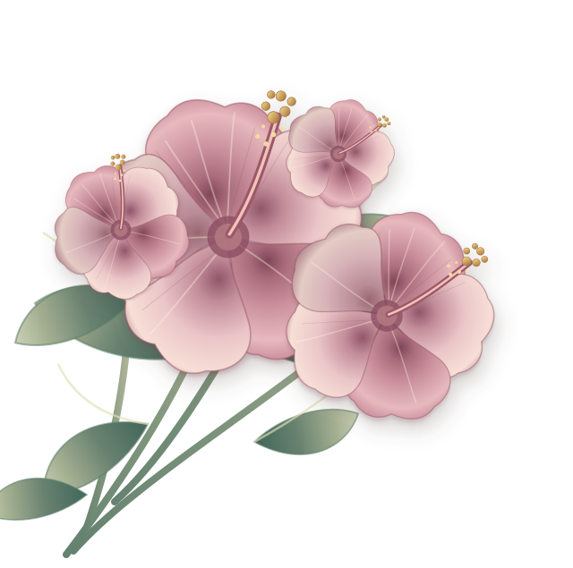

NUESTRA HISTORIA CONTINÚA
Lo nuestro
sigue floreciendo
Después de tanto tiempo esperando su momento...
Esta invitación por fin llega a tus manos.
José & Asly
Y ahora damos el paso
que tanto soñamos.
CON LA BENDICIÓN DE DIOS
José & Asly
26 · 12 · 2026

Una historia tejida con amor y tradición
NUESTRA HISTORIA CONTINÚA
Después de tanto tiempo esperando su momento...
Esta invitación por fin llega a tus manos.
José & Asly
Y ahora damos el paso
que tanto soñamos.
02 · UN CAPÍTULO DE NOSOTROS
DESDE 2015
Hay historias de amor que no solo se cuentan, se viven…
Desde 2015 comenzamos a escribir la nuestra: con sonrisas, sueños, aprendizajes y momentos que nos han hecho crecer juntos.
Crecimos, cambiamos, aprendimos y seguimos eligiéndonos.

«Por encima de todo, vístanse de amor, que es el vínculo perfecto».COLOSENSES 3:14
03 · DOS MOMENTOS, UN MISMO DÍA

CEREMONIA RELIGIOSA
Iglesia San José de Majagual
Hora por confirmar

RECEPCIÓN
Gastro-bar Majagua · Barrio Panamá
Hora por confirmar
CADA DÍA MÁS CERCA
26 · 12 · 2026
Para decir “sí, acepto” frente a Dios, nuestra familia y amigos.
Primera muestra del diseño artesanal de la Invitación 2. Las demás secciones se incorporarán después de aprobar esta dirección visual.